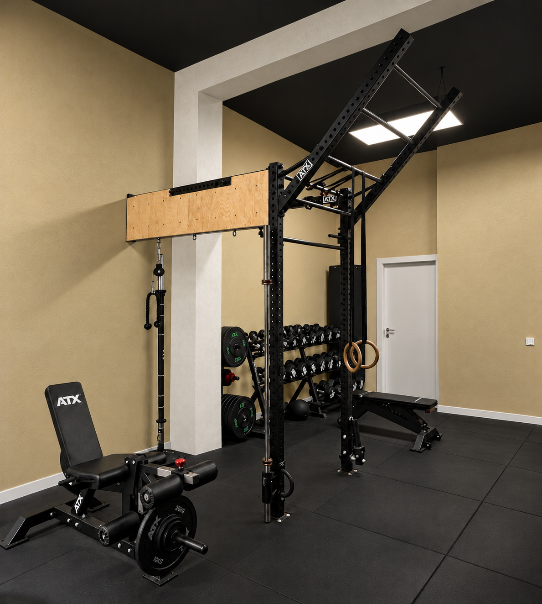

Allenamento Funzionale
Movimenti e lavoro funzionale inseriti in un percorso personalizzato.
Training · Rever Studio
Personal training a cura di Matteo D’Uggento, con il supporto dell’osteopata Mattia Marinoni, per accompagnarti con attenzione e competenza nel tuo percorso di allenamento.

Il nostro approccio
Percorsi individuali e di gruppo pensati per adulti e ragazzi, tenendo conto dell’età, della preparazione atletica e degli obiettivi di ciascuno.
Movimenti e lavoro funzionale inseriti in un percorso personalizzato.
Allenamento con i pesi, adattato alla preparazione e agli obiettivi della persona.
Allenamento a corpo libero per esplorare il movimento e il controllo del corpo.
Più modi di muoversi
Matteo integra l’allenamento con preparazione atletica, educazione posturale, stretching e Pancafit, scegliendo gli strumenti in base al percorso della persona.
La sua esperienza comprende anche la preparazione atletica di bambini e adolescenti, oltre alla formazione in Scienze Motorie e dello Sport.
Conosci MatteoApproccio integrato
Un acciacco che ti ha fermato, un fastidio che non ti lascia spingere come vorresti: da Rever non devi cercare altrove. Matteo in sala e Mattia, il nostro osteopata, lavorano sullo stesso percorso e si confrontano su di te.
Conosci MattiaChe tu stia ripartendo dopo uno stop o ti alleni con obiettivi ambiziosi, hai sempre al tuo fianco una squadra unica, con un approccio multidisciplinare pensato per il tuo benessere a 360 gradi.